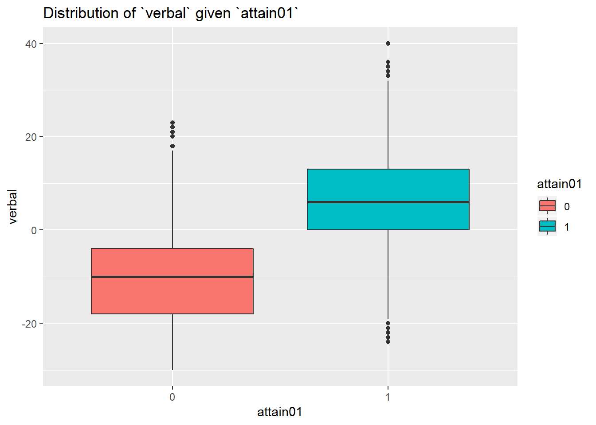

3 Preliminary analysis
3.1 Univariate analysis
As usually done on preliminary analysis, the first thing we want to do is establishing the types of the variables:
inspectdf::inspect_types(data)## # A tibble: 2 x 4
## type cnt pcnt col_name
## <chr> <int> <dbl> <list>
## 1 factor 3 50 <chr [3]>
## 2 numeric 3 50 <chr [3]>We have 3 categorial and 3 numerical variables.
3.1.1 Numerical variables
First we’ll analyze the numerical ones:
data_inspect_num = inspectdf::inspect_num(data)
data_inspect_num %>% select(-hist)## # A tibble: 3 x 9
## col_name min q1 median mean q3 max sd pcnt_na
## <chr> <dbl> <dbl> <dbl> <dbl> <dbl> <dbl> <dbl> <dbl>
## 1 attain 1 3 5 5.68 9 10 3.06 0
## 2 social 0 0 0 6.84 20 31 10.9 0
## 3 verbal -30 -11 -2 -2.20 7 40 13.3 0data_inspect_num %>% inspectdf::show_plot()We see that the only variable which seems to have an approximately continuous distribution is verbal.
The variable attain, which will be our response, show a very imbalanced bimodal discrete distribution, with peaks around 2 and 10.
social, instead, despite seemingly having a large support, has appearantly only have few values:
data$social %>% table## .
## 0 1 20 31
## 2247 185 706 2973.1.2 Categorical variables
Next, we analyze the factors:
inspectdf::inspect_cat(data) %>% inspectdf::show_plot()From the plot above we can see that:
The
primaryvariable has a huge support (148 categories) and there seems not to be a prevalent school between them, although there’re primary schools with very little representation.data %>% group_by(primary) %>% summarise(n=n()) %>% select(primary,n) %>% mutate(size=ifelse(n<10,"small",ifelse(n>50,"large","medium"))) %>% pull(size) %>% table## . ## large medium small ## 10 95 43As we can see, 43 primary schools are represented by 10 students or less.
The
secondvariable seems to have a very uniform distribution as well: we have 19 secondary schools in which the test is submitted to studentsdata %>% group_by(second) %>% summarise(n=n()) %>% filter(n==max(n) | n==min(n))## # A tibble: 2 x 2 ## second n ## <fct> <int> ## 1 10 92 ## 2 14 290The school 10 (smallest one) has 92 students, while the school 14 (biggest one) has 290.
The students are equally distributed between females and males
Finally, as per request point 1, we have to recode the variable attain into attain01 which is an indicator for the score test being higher than 5:
data = data %>%
mutate(attain01=cut(attain,breaks=c(-Inf,5,Inf),labels=c(0,1)))
ggplot(data, aes(x=attain01)) + geom_bar(fill='orange')We see that the two classes are balanced (around 1750 students in class 0, 1600 in class 1).
3.1.3 Missing values
We can easily test for missing values with inspect_na of the inspectdf package.
inspectdf::inspect_na(data)## # A tibble: 7 x 3
## col_name cnt pcnt
## <chr> <dbl> <dbl>
## 1 verbal 0 0
## 2 attain 0 0
## 3 primary 0 0
## 4 sex 0 0
## 5 social 0 0
## 6 second 0 0
## 7 attain01 0 0We have no missing values.
3.2 Bivariate analysis
Before starting on with the bayesian modelling, it’s a nice practice to check for correlation between the variables in the dataset.
3.2.1 attain and verbal
The first correlation I’ll check is attain01 vs. verbal. Since the former is a dichotomic variable, and the latter is approximately continuous, I’ll fit a frequentist logistic regression to check:
glm(attain01~verbal, data=data, family=binomial) %>% summary##
## Call:
## glm(formula = attain01 ~ verbal, family = binomial, data = data)
##
## Deviance Residuals:
## Min 1Q Median 3Q Max
## -2.8186 -0.6583 -0.1477 0.6794 2.7287
##
## Coefficients:
## Estimate Std. Error z value Pr(>|z|)
## (Intercept) 0.208883 0.045968 4.544 5.52e-06 ***
## verbal 0.162804 0.005548 29.344 < 2e-16 ***
## ---
## Signif. codes: 0 '***' 0.001 '**' 0.01 '*' 0.05 '.' 0.1 ' ' 1
##
## (Dispersion parameter for binomial family taken to be 1)
##
## Null deviance: 4755.8 on 3434 degrees of freedom
## Residual deviance: 3005.5 on 3433 degrees of freedom
## AIC: 3009.5
##
## Number of Fisher Scoring iterations: 5The coefficient for verbal is positive and significative, yet not huge: that suggests a small positive correlation between the score obtained during the secondary school’s entrance test and the test whose scores are being analyzed now. This can be appreciated in the plots below:
ggplot(data=data, aes(y=verbal, x=attain01, fill=attain01)) +
geom_boxplot() +
ggtitle("Distribution of `verbal` given `attain01`")
Especially from the boxplot above, we can see that the distributions of verbal given attain01 are different, and that the central 50% of the distribution lie on separate portions of the space of verbal.
Those observations might lay the foundations for the models we’re going to construct in the next sections.
3.2.2 attain and sex
First I create a contingency table, from which we can appreciate a difference in distribution of attain01 for different sex groups:
contmatr = data %>%
group_by(sex, attain01) %>%
summarise(n = n()) %>%
spread(attain01, n) %>%
magrittr::set_rownames(.$sex) %>%
ungroup() %>%
select(-sex) %>%
as.matrix
make_cont_table = function(x){
rbind(
cbind(x,apply(x,MARGIN = 1, FUN = sum) %>%
matrix(ncol = 1)),
c(apply(x,MARGIN = 2, FUN = sum),
1))
}
make_cont_table(contmatr / sum(contmatr))## 0 1
## M 0.2847162 0.2215429 0.5062591
## F 0.2363901 0.2573508 0.4937409
## 0.5211063 0.4788937 1.0000000These two plots help better visualize the disparity:
vcd::mosaic(contmatr, shade=T, legend=F,
main = 'Joint distribution of `attain01` and `sex`',
labeling_args =
list(set_varnames = c(A="sex", B="attain01")))ggplot(data, aes(x=attain01, fill=sex)) +
geom_bar() +
ggtitle("Distribuion of `attain01` given `sex`")From the charts above, there seems to be a disparity in results depending upon the gender: females seem to have fared better than men, despite the marginal distribution of sex being almost uniform
3.2.4 attain and secondary school
ggplot(data %>% select(attain01, second) %>% group_by_all %>%
summarise(n = n()) %>%
inner_join(data %>% select(second) %>%
group_by(second) %>%
summarise(stud = n())) %>%
mutate(prop = n/stud),
aes(x=second, fill=attain01)) +
geom_bar(aes(y=prop), position="stack", stat="identity") +
ggtitle("Proportion of `attain01` for each secondary school")## Joining, by = "second"There proportions of 0s and 1s in test sufficiency are etherogeneous across the schools: in school 19 only ~20% of students got more than 5 as a score, while in school 12 ~60% of student achieved this result.
3.2.6 attain and primary school
ggplot(data %>% select(primary, attain01) %>% group_by_all %>%
summarise(n = n()) %>%
inner_join(data %>% select(primary) %>%
group_by_all %>%
summarise(stud = n())) %>%
mutate(prop = n/stud) ,
aes(x=primary, fill=attain01)) +
geom_bar(aes(y=prop), position="stack", stat="identity") +
ggtitle("Proportion of test results for each primary school") +
theme(axis.text.x = element_blank()) ## Joining, by = "primary"
3.2.5 social composition for primary schools